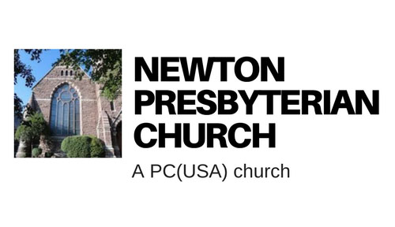

My community's presbyterian church was in need of a new website after an internal split. I offered my time to help them create the website they needed, and I worked with many mebembers of the church to achieve the look and feel they wanted. As said by many, the website was more than just their online presence, but it helped the church feel authentic again. The elegant, minimalist look, the personalized graphics and photos, and the soothing colors were chosen to reflect their identity.
In order to make the website editable after I finsihed it, I created it on Weebly, which is an intuitive and interactive website-building website.